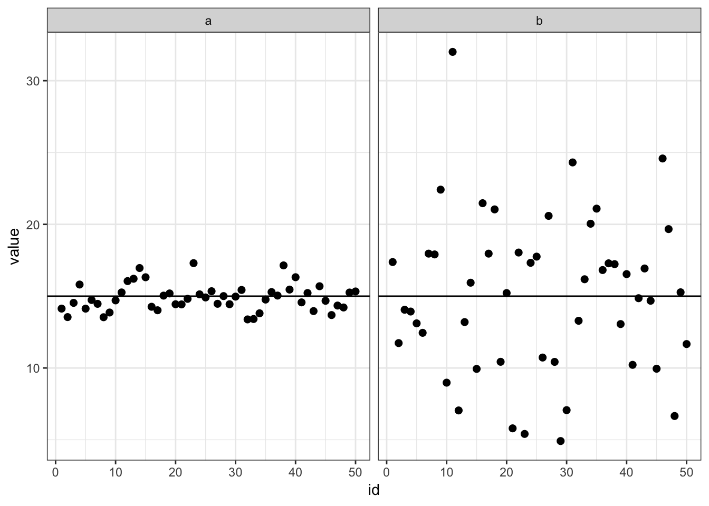

資料の整理
本日の目標
- 大まかなデータの種類を理解する
- 度数分布表を作成する
- 度数分布表からヒストグラムを作成する
- 代表値と散布度の算出方法を理解する
1.1 統計資料の整理
統計資料 (statistical data, データ)
調査、実験、既存の資料を調べて得られたデータ
例) ある小学校1年生の身長, 体重, 性別, 学校での満足度を知りたい
集団と個体
- 調査対象となる
集団= 小学校
- 集団を構成する
個体= 児童
変量と属性
変量(variate): 個体ごとに変動する数量的な特性
例) 身長, 体重
(Aさんは150cm, Bさんは160cm, Cさんは155cm…)
(Aさんは50kg, Bさんは60kg, Cさんは55kg…)
属性 (attribute): 個体ごとに変動する質的な特性
例) 性別 (男, 女), 学校での満足度(満足, 不満足)
(Aさんは男, Bさんは女, Cさんは男…)
(Aさんは満足, Bさんは満足, Cさんは不満…)


変数の種類
連続変量: 測定値が実数値で表される
- 目盛りに句切れがなく連続している (小数点がつく)
- 例) 身長, 体重
離散変数: 測定値が整数でしか表せない
- 目盛りに句切れがある (小数点がつかない)
- 例) 満足度(満足してない=o, 満足している=1)
得られた資料の整理手順
- 統計資料の入手
度数分布表の作成ヒストグラムを作成し, 視覚的に資料の分布を把握代表値,散布度等の特性値を求め、資料の分布の特徴を数量的に把握
1.1.1 度数分布表の作成
最小値と最大値をみつける。
級の数\(k\)を決める。級限界を求める。級代表値を求める。- 各級の
度数と合計を求める.
\(n\)個のデータ\(x_1,x_2,\dots,x_n\) を得たときの度数分布表の作成を考える
- 例えば, 20~60の値をとる計40個体のデータXだと
\(x_1=20, x_2=21, x_3=22, \dots, x_{60}=60\)
[1] 21 22 23 24 25 26 27 28 29 30 31 32 33 34 35 36 37 38 39 40 41 42 43
[24] 44 45 46 47 48 49 50 51 52 53 54 55 56 57 58 59 601. 最小値と最大値をみつける。
最小値を \(\alpha_0\) 、最大値を \(\alpha_n\) とする
# 最大値と最小値をみつける
Xmax <- max(X)
Xmin <- min(X)最大値\(X_{max}\)は60, 最小値\(X_{min}\)は21
2. 級の数\(k\)を決める
最大値から最小値を引き, \(k\)等分し、分点を, \(\alpha_1,\alpha_2,\dots,\alpha_{k-1}\)とする。
\(k\)を4とすると…
# (最大値 - 最小値) / 級の数
k = 4
# 20~60を10ごと区切ると4等分になる
(Xmax - (Xmin - 1))/k[1] 10 先の例の分点は, 以下のようになる。
- \(\alpha_1 = 30\)
- \(\alpha_2 = 40\)
- \(\alpha_3 = 50\)
級の数(\(k\))が大きすぎると分布の特性が表しにくく、小さすぎると部分的な特性が消されるが、データの大きさ(個数)\(n\)に関連して定める。
3. 級限界を決める。
級： \[ \begin{align} \alpha_0\sim\alpha_1,\alpha_1\sim\alpha_2,\dots, \alpha_{k-1}\sim\alpha_k(\alpha_k=\alpha_n) \end{align} \]
- 第1の級: \(\alpha_0\sim\alpha_1\)
- 第1の級の級下限界\(\alpha_0\)
- 第1の級の級上限界\(\alpha_1\)
- これらを単に級限界と呼ぶ。
4. 級代表値を求める。
第\(i\)の級の代表値： \[ \begin{align} x^*_i=\frac{\alpha_i+\alpha_{i-1}}{2} (i=1,\dots,k) \end{align} \]
5. 各級の度数と合計を求める.
度数= 各級に属するデータの数\(f_i(i=1,\dots,k)\)
度数の合計 = \(n(n=f_1+f_2+\dots+f_k)\)
| 級 | 級代表値\(x^*\) | 度数\(f\) |
|---|---|---|
| \(\alpha_0\sim\alpha_1\) | \(x^*_1\) | \(f_1\) |
| \(\alpha_1\sim\alpha_2\) | \(x^*_2\) | \(f_2\) |
| \(\vdots\) | \(\vdots\) | \(\vdots\) |
| \(\alpha_{i-1}\sim\alpha_i\) | \(x^*_i\) | \(f_i\) |
| \(\vdots\) | \(\vdots\) | \(\vdots\) |
| \(\alpha_{n-1}\sim\alpha_n\) | \(x^*_k\) | \(f_k\) |
| 級 | 級代表値\(x^*\) | 度数\(f\) |
|---|---|---|
| \(20\sim 30\) | \(25\) | \(10\) |
| \(30\sim 40\) | \(35\) | \(10\) |
| \(40\sim 50\) | \(45\) | \(10\) |
| \(50\sim 60\) | \(55\) | \(10\) |
1.1.2 ヒストグラムの作成
度数分布を図示し視覚的に理解する
- 度数分布表を作成 (級ごとの度数を求める)
- 得点を横軸、度数を縦軸にとる
- 各階級の度数をプロットする
中学1年生100人の英語のテストの得点 (表1.2)
# 100人の得点をenglishに格納
english <- c(20, 29, 83, 50, 33, 44, 41, 60, 66, 74, 38, 83, 46, 33, 77, 57,
50, 77, 73, 61, 41, 15, 39, 45, 56, 67, 63, 86, 84, 84, 54, 50, 59, 58,
63, 70, 78, 50, 64, 59, 63, 75, 63, 60, 76, 89, 85, 62, 68, 75, 77, 68,
78, 79, 87, 65, 63, 77, 72, 61, 87, 30, 24, 80, 67, 61, 70, 30, 71, 64,
99, 94, 37, 31, 37, 71, 71, 69, 63, 56, 17, 41, 46, 47, 76, 61, 87, 51,
73, 69, 34, 31, 53, 24, 50, 77, 68, 62, 56, 76)# 小さい順に並び替えると
sort(english) [1] 15 17 20 24 24 29 30 30 31 31 33 33 34 37 37 38 39 41 41 41 44 45 46
[24] 46 47 50 50 50 50 50 51 53 54 56 56 56 57 58 59 59 60 60 61 61 61 61
[47] 62 62 63 63 63 63 63 63 64 64 65 66 67 67 68 68 68 69 69 70 70 71 71
[70] 71 72 73 73 74 75
[ reached getOption("max.print") -- omitted 25 entries ]度数分布表を作成
- 今回は, 教科書に合わせて, 最小値を9.5, 最大値を99.5とし, 級数を9とする。
- 今回は, 10ごとの分点となり, 各級の級代表値は級の区間の中点になる。
- 各級の度数をカウントする
ヒストグラムをプロット
- 赤線は
度数折線(各級の代表値を直線結んだ線) - 柱状グラフは
ヒストグラム(各級の度数を柱状グラフで表現)
ヒストグラム作成関数(hist)から度数分布表を抜き出すコード (おまけ)
# 最大値を99.5, 最小値を9.5とし、9階級で整理する
h1 <- hist(english, breaks = seq(9.5, 99.5, 10), plot = F)
# 級の数
k <- length(h1$counts)
class_names <- NULL # 級の名前格納用
rep_k <- NULL # 級の代表値格納用
for (i in 1:k) {
class_names[i] <- paste(h1$breaks[i], "～", h1$breaks[i + 1])
rep_k[i] <- (h1$breaks[i + 1] + h1$breaks[i])/2
}
frequency_table <- data.frame(級 = class_names, 級代表値 = rep_k, 度数 = h1$counts)
frequency_table 級 級代表値 度数
1 9.5 ～ 19.5 14.5 2
2 19.5 ～ 29.5 24.5 4
3 29.5 ～ 39.5 34.5 11
4 39.5 ～ 49.5 44.5 8
5 49.5 ～ 59.5 54.5 15
6 59.5 ～ 69.5 64.5 25
7 69.5 ～ 79.5 74.5 22
8 79.5 ～ 89.5 84.5 11
9 89.5 ～ 99.5 94.5 2地道に度数をカウントするコード(おまけ)
# 級1の度数
length(english[english <= 19.5])[1] 2# 級2の度数
length(english[english >= 19.5 & english <= 29.5])[1] 4# 級3の度数
length(english[english >= 29.5 & english <= 39.5])[1] 11# 級4の度数
length(english[english >= 39.5 & english <= 49.5])[1] 8# 級5の度数
length(english[english >= 49.5 & english <= 59.5])[1] 15# 級6の度数
length(english[english >= 59.5 & english <= 69.5])[1] 25# 級7の度数
length(english[english >= 69.5 & english <= 79.5])[1] 22# 級8の度数
length(english[english >= 79.5 & english <= 89.5])[1] 11# 級9の度数
length(english[english >= 89.5 & english <= 99.5])[1] 21.2代表値と散布度
代表値= データの中心的な位置を表す量
散布度= データの分布のバラツキの程度を表す量
1.2.1 代表値
平均値
- データが\(x_1,x_2,\dots,x_n\)の時の平均値:
\[ \begin{align} \bar{x}=\frac{x_1+x_2+\dots+x_n}{n}=\frac{1}{n}\sum_{i=1}^n x_i \end{align} \]
- \(k\)個の級に分けて、その級代表値を\(x^*_1,x^*_2,\dots,x^*_k\)の時の平均値:
\[ \begin{align} \bar{x}=\frac{x^*_1 f_1+x^*_2 f_2+\dots+x^*_k f_k}{n}=\frac{1}{n}\sum_{i=1}^k x^*_i f_i \end{align} \]
- 加重平均:
\(x_1\)が\(f_1\)個,\(x_2\)が\(f_2\)個,\(\dots\),\(x_k\)が\(f_k\)個あるときに上式を用いて算出する平均値
中央値
データ\(x_1,x_2,\dots,x_n\)を小さい順に並べたものを以下で表す。 \[ \begin{align} x^{(1)}≦x^{(2)}≦\dots≦x^{(n-1)}≦x^{(n)} \end{align} \]
この時、中央の値を
中央値(median)といい\(\tilde{x}\)で表す。\(n\)が奇数の時の中央値 \[ \begin{align} \tilde{x}=x^{((n+1)/2)} \end{align} \]
\(n\)が偶数の時の中央値 \[ \begin{align} \tilde{x}=\frac{1}{2}(x^{(n/2)}+x^{(n/2+1)}) \end{align} \]
1.2.2 散布度
分散
\[ \begin{align} s^2=\frac{(x_1-\bar{x})^2+(x_2-\bar{x})^2+\dots+(x_n-\bar{x})^2}{n}=\frac{1}{n}\sum_{i=1}^n (x_i-\bar{x})^2 \end{align} \]
\(s^2\)が小さとき、データは\(\bar{x}\)付近に密集し、バラツキが大きいと\(s^2\)はでかくなる。
左図: 平均=15, 分散=1, 右図: 平均=15, 分散=5 
標準偏差
- 分散の平方根
\[ \begin{align} s^2=\frac{(x_1-\bar{x})^2+(x_2-\bar{x})^2+\dots+(x_n-\bar{x})^2}{n}=\frac{1}{n}\sum_{i=1}^n (x_i-\bar{x})^2 \end{align} \]
\[ \begin{align} s^2=\frac{1}{n}\sum_{i=1}^n (x^2_i)-(\bar{x})^2 \end{align} \]
\[ \begin{align} s=\sqrt{s^2} \end{align} \]
- 級に分けられたデータ
\[ \begin{align} s^2=\frac{1}{n}\sum_{i=1}^n (x^*_i-\bar{x})^2 f_i=\frac{1}{n}\sum_{i=1}^n (x^*_i)^2 f_i-(\bar{x})^2 \end{align} \]
\[ \begin{align} s=\sqrt{s^2} \end{align} \]
\[ \begin{align} n=f_1+f_2+\dots+f_k \end{align} \]
例題1.1
数学の同一問題をA, B 2クラスのそれぞれ生徒20人を対象に試験を行い, その結果をもとに次の度数分布表を得た。
各クラスの度数折れ線、平均、分散、標準偏差を求めよ
度数折れ線
- 赤がクラスA, 青がクラスB
平均: 級代表値を使用
\[ \begin{align} \bar{x}=\frac{x^*_1 f_1+x^*_2 f_2+\dots+x^*_k f_k}{n}=\frac{1}{n}\sum_{i=1}^k x^*_i f_i \end{align} \]
- クラスAの平均
\[ \begin{align} \bar{x}=\frac{25\times 0+35\times 2+45\times 3+55\times 10+65\times 3+75\times 2+85\times 0}{20} = 55 \end{align} \]
# 手計算
((25 * 0) + (35 * 2) + (45 * 3) + (55 * 10) + (65 * 3) + (75 * 2) + (85 * 0))/20[1] 55# 合計を算出するsum関数を使う
代表値 <- c(25, 35, 45, 55, 65, 75, 85)
Aクラスの度数 <- c(0, 2, 3, 10, 3, 2, 0)
Aクラスの人数 <- 20
sum(代表値 * Aクラスの度数)/Aクラスの人数[1] 55- クラスBの平均
\[ \begin{align} \bar{x}=\frac{25\times 1+35\times 3+45\times 3+55\times 5+65\times 5+75\times 2+85\times 1}{20} = 55 \end{align} \]
# 手計算
((25 * 1) + (35 * 3) + (45 * 3) + (55 * 5) + (65 * 5) + (75 * 2) + (85 * 1))/20[1] 55# 合計を算出するsum関数を使う
代表値 <- c(25, 35, 45, 55, 65, 75, 85)
Bクラスの度数 <- c(1, 3, 3, 5, 5, 2, 1)
Bクラスの人数 <- 20
sum(代表値 * Bクラスの度数)/Bクラスの人数[1] 55分散: 級代表値を使用
\[ \begin{align} s^2=\frac{1}{n}\sum_{i=1}^n (x^*_i-\bar{x})^2 f_i=\frac{1}{n}\sum_{i=1}^n (x^*_i)^2 f_i-(\bar{x})^2 \end{align} \]
- 標準偏差
\[ \begin{align} s=\sqrt{s^2} \end{align} \]
- クラスAの分散
\[ \begin{align} s^2=\frac{(25-55)^2\times 0+(35-55)^2\times 2+(45-55)^2\times 3+(55-55)^2\times 10+(65-55)^2\times 3+(75-55)^2\times 2+(85-55)^2\times 0}{20}= 110 \end{align} \]
# 手計算
(((25 - 55)^2) * 0 + ((35 - 55)^2) * 2 + ((45 - 55)^2) * 3 + ((55 - 55)^2) *
10 + ((65 - 55)^2) * 3 + ((75 - 55)^2) * 2 + ((85 - 55)^2) * 0)/20[1] 110# 合計を算出するsum関数を使う
代表値 <- c(25, 35, 45, 55, 65, 75, 85)
Aクラスの度数 <- c(0, 2, 3, 10, 3, 2, 0)
Aクラスの人数 <- 20
Aクラスの平均 <- 55
sum(((代表値 - Aクラスの平均)^2) * Aクラスの度数)/Aクラスの人数[1] 110- クラスAの標準偏差
\[ \begin{align} s=\sqrt{110}\risingdotseq 10.488 \end{align} \]
print(sqrt(110), digits = 5)[1] 10.488- クラスBの分散
\[ \begin{align} s^2=\frac{(25-55)^2\times 1+(35-55)^2\times 3+(45-55)^2\times 3+(55-55)^2\times 5+(65-55)^2\times 5+(75-55)^2\times 2+(85-55)^2\times 1}{20}= 230 \end{align} \]
# 手計算
(((25 - 55)^2) * 1 + ((35 - 55)^2) * 3 + ((45 - 55)^2) * 3 + ((55 - 55)^2) *
5 + ((65 - 55)^2) * 5 + ((75 - 55)^2) * 2 + ((85 - 55)^2) * 1)/20[1] 230# 合計を算出するsum関数を使う
代表値 <- c(25, 35, 45, 55, 65, 75, 85)
Bクラスの度数 <- c(1, 3, 3, 5, 5, 2, 1)
Bクラスの人数 <- 20
Bクラスの平均 <- 55
sum(((代表値 - Bクラスの平均)^2) * Bクラスの度数)/Bクラスの人数[1] 230- クラスBの標準偏差
\[ \begin{align} s=\sqrt{230}\risingdotseq 15.166 \end{align} \]
print(sqrt(230), digits = 5)[1] 15.166例題の回答まとめ
この結果、両クラスの平均点は等しいが、Bクラスの方が標準偏差が大きいので、BクラスはAクラスよりもデータの散らばりの度合いが大きいと言える。
Copyright © 2016 竹林由武. All rights reserved.